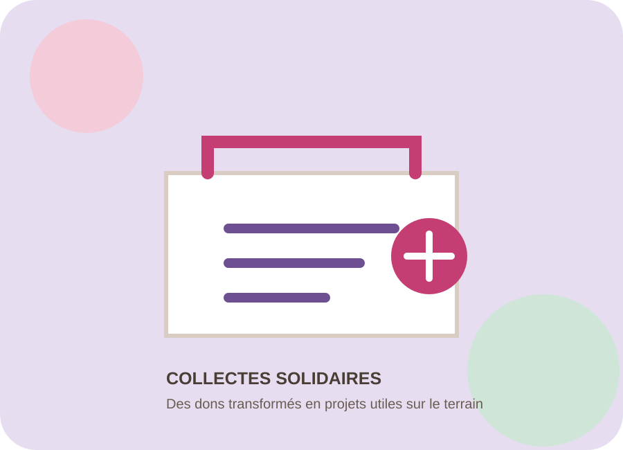
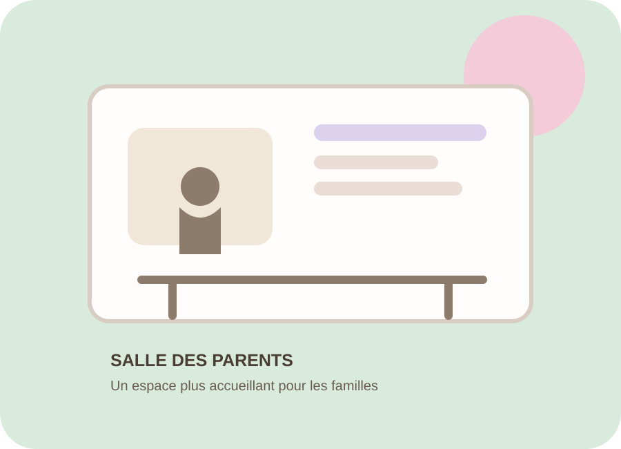
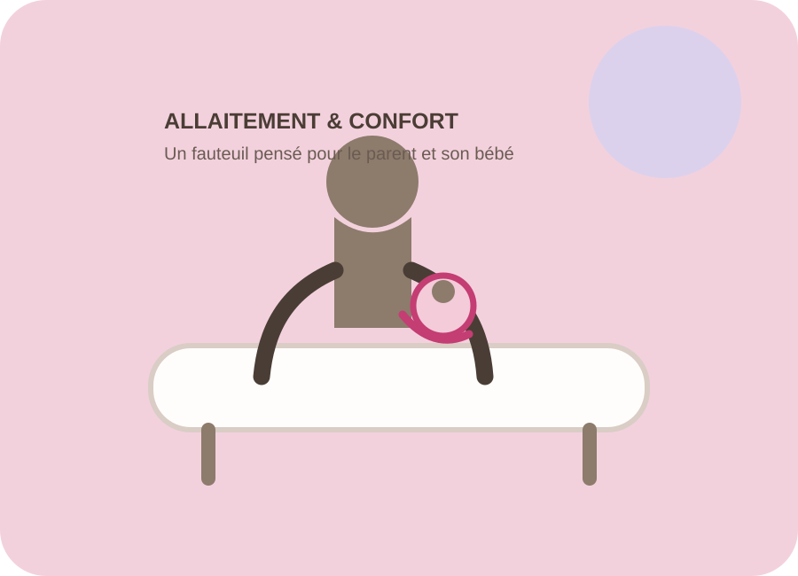

COLLECTE
Une première Marche de printemps
La première édition a permis de récolter plus de 1 000 € au profit des projets de l'association.
Actualités
Collectes, projets et moments importants : cette page sera enrichie au fil des actions de À p'tits pas.

La première édition a permis de récolter plus de 1 000 € au profit des projets de l'association.

7 000 € ont été investis pour améliorer l'accueil et le confort des familles.

Un équipement financé pour accompagner le confort et le lien parent-bébé dans les deux secteurs.
Un rendez-vous solidaire organisé chaque année au mois de décembre.